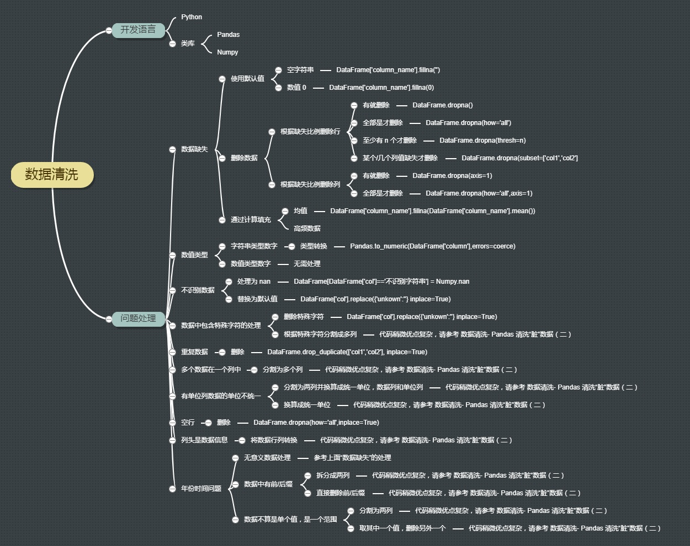

使用Pandas进行数据清洗¶

简介¶
Pandas 是 Python 中很流行的类库，使用它可以进行数据科学计算和数据分析。数据分析结果的好坏依赖于数据的好坏。
存在数据缺失、数据格式不统一、数据错误的情况。
不管是不完善的报表，还是技术处理数据的失当，都会不可避免的产生“脏”数据。
首先要检查数据，明确数据分析目的。在此基础上：
处理缺失数据
添加默认值
删除不完整的行
删除不完整的列
规范化数据类型
必要的转换
变量重命名
保存结果
https://www.cnblogs.com/BoyceYang/p/8182053.html

案例1： 电影数据清洗¶
Imdb5000数据包含了很多信息，例如演员、导演、预算、总收入，以及 IMDB 评分和上映时间。有一些列的值是缺失的，有些列的默认值是0，有的是 NaN（Not a Number）。下面我们通过使用 Pandas 提供的功能来清洗“脏”数据。数据来源:
https://www.kaggle.com/carolzhangdc/imdb-5000-movie-dataset
https://raw.githubusercontent.com/sundeepblue/movie_rating_prediction/master/movie_metadata.csv
import pandas as pd
data = pd.read_csv('../data/movie_metadata.csv')
data.columns
Index(['color', 'director_name', 'num_critic_for_reviews', 'duration',
'director_facebook_likes', 'actor_3_facebook_likes', 'actor_2_name',
'actor_1_facebook_likes', 'gross', 'genres', 'actor_1_name',
'movie_title', 'num_voted_users', 'cast_total_facebook_likes',
'actor_3_name', 'facenumber_in_poster', 'plot_keywords',
'movie_imdb_link', 'num_user_for_reviews', 'language', 'country',
'content_rating', 'budget', 'title_year', 'actor_2_facebook_likes',
'imdb_score', 'aspect_ratio', 'movie_facebook_likes'],
dtype='object')
检查数据¶
Pandas 提供了describe()方法描述数据，还提供了 head() 方法，输出前几行数据，让我们对读入的数据有一个大致的了解。此外，Pandas 提供了一些数据切片的方法：
查看一列的一些基本统计信息：
data['columnname'].describe()选择一列：
data['columnname']选择一列的前几行数据：
data['columnsname'][:n]选择多列：
data[['column1','column2']]Where 条件过滤：
data[data['columnname'] > condition]
data.head()
| color | director_name | num_critic_for_reviews | duration | director_facebook_likes | actor_3_facebook_likes | actor_2_name | actor_1_facebook_likes | gross | genres | ... | num_user_for_reviews | language | country | content_rating | budget | title_year | actor_2_facebook_likes | imdb_score | aspect_ratio | movie_facebook_likes | |
|---|---|---|---|---|---|---|---|---|---|---|---|---|---|---|---|---|---|---|---|---|---|
| 0 | Color | James Cameron | 723.0 | 178.0 | 0.0 | 855.0 | Joel David Moore | 1000.0 | 760505847.0 | Action|Adventure|Fantasy|Sci-Fi | ... | 3054.0 | English | USA | PG-13 | 237000000.0 | 2009.0 | 936.0 | 7.9 | 1.78 | 33000 |
| 1 | Color | Gore Verbinski | 302.0 | 169.0 | 563.0 | 1000.0 | Orlando Bloom | 40000.0 | 309404152.0 | Action|Adventure|Fantasy | ... | 1238.0 | English | USA | PG-13 | 300000000.0 | 2007.0 | 5000.0 | 7.1 | 2.35 | 0 |
| 2 | Color | Sam Mendes | 602.0 | 148.0 | 0.0 | 161.0 | Rory Kinnear | 11000.0 | 200074175.0 | Action|Adventure|Thriller | ... | 994.0 | English | UK | PG-13 | 245000000.0 | 2015.0 | 393.0 | 6.8 | 2.35 | 85000 |
| 3 | Color | Christopher Nolan | 813.0 | 164.0 | 22000.0 | 23000.0 | Christian Bale | 27000.0 | 448130642.0 | Action|Thriller | ... | 2701.0 | English | USA | PG-13 | 250000000.0 | 2012.0 | 23000.0 | 8.5 | 2.35 | 164000 |
| 4 | NaN | Doug Walker | NaN | NaN | 131.0 | NaN | Rob Walker | 131.0 | NaN | Documentary | ... | NaN | NaN | NaN | NaN | NaN | NaN | 12.0 | 7.1 | NaN | 0 |
5 rows × 28 columns
from collections import Counter
freq = Counter(data['director_name'].tolist())
sorted(list(freq.items()), key=lambda x: x[1], reverse=True)[:10]
[(nan, 104),
('Steven Spielberg', 26),
('Woody Allen', 22),
('Martin Scorsese', 20),
('Clint Eastwood', 20),
('Ridley Scott', 17),
('Tim Burton', 16),
('Steven Soderbergh', 16),
('Spike Lee', 16),
('Renny Harlin', 15)]
一、缺失数据¶
为什么要考虑数值缺失的情况？
真实世界的数据很少是干净和一致的
许多有趣的数据集都会丢失一些数据
不同的数据源可能以不同的方式表示缺失的数据
缺失数据是最常见的问题之一。产生这个问题可能的原因
① 从来没有填正确过② 数据不可用③ 计算错误
处理缺失数据的方法： 一、补充缺失值; 二、删除缺失值; 三、不处理
1. 使用默认值填补缺失¶
data.isnull()[:5] # 通过这个函数查看是否有缺失值。True表示缺失，False表示没有缺失。
| color | director_name | num_critic_for_reviews | duration | director_facebook_likes | actor_3_facebook_likes | actor_2_name | actor_1_facebook_likes | gross | genres | ... | num_user_for_reviews | language | country | content_rating | budget | title_year | actor_2_facebook_likes | imdb_score | aspect_ratio | movie_facebook_likes | |
|---|---|---|---|---|---|---|---|---|---|---|---|---|---|---|---|---|---|---|---|---|---|
| 0 | False | False | False | False | False | False | False | False | False | False | ... | False | False | False | False | False | False | False | False | False | False |
| 1 | False | False | False | False | False | False | False | False | False | False | ... | False | False | False | False | False | False | False | False | False | False |
| 2 | False | False | False | False | False | False | False | False | False | False | ... | False | False | False | False | False | False | False | False | False | False |
| 3 | False | False | False | False | False | False | False | False | False | False | ... | False | False | False | False | False | False | False | False | False | False |
| 4 | True | False | True | True | False | True | False | False | True | False | ... | True | True | True | True | True | True | False | False | True | False |
5 rows × 28 columns
👉使用空字符串填补¶
data.director_name.fillna('')
# 此处用空字符串替代缺失值
# 该函数的使用方法：列表名称.列名.fillna('替代NA的字符')
0 James Cameron
1 Gore Verbinski
2 Sam Mendes
3 Christopher Nolan
4 Doug Walker
...
5038 Scott Smith
5039
5040 Benjamin Roberds
5041 Daniel Hsia
5042 Jon Gunn
Name: director_name, Length: 5043, dtype: object
👉使用数值0进行填补¶
data['duration'].fillna(0)
0 178.0
1 169.0
2 148.0
3 164.0
4 0.0
...
5038 87.0
5039 43.0
5040 76.0
5041 100.0
5042 90.0
Name: duration, Length: 5043, dtype: float64
2.删除缺失数据¶
①有缺失数据的情况就删除（一行任意出现一个缺失值我就删掉）¶
data.dropna()[:3]
# 删除任何包含 NA 值的行：
# 可以看到原本有NA值得行全部被删除
| color | director_name | num_critic_for_reviews | duration | director_facebook_likes | actor_3_facebook_likes | actor_2_name | actor_1_facebook_likes | gross | genres | ... | num_user_for_reviews | language | country | content_rating | budget | title_year | actor_2_facebook_likes | imdb_score | aspect_ratio | movie_facebook_likes | |
|---|---|---|---|---|---|---|---|---|---|---|---|---|---|---|---|---|---|---|---|---|---|
| 0 | Color | James Cameron | 723.0 | 178.0 | 0.0 | 855.0 | Joel David Moore | 1000.0 | 760505847.0 | Action|Adventure|Fantasy|Sci-Fi | ... | 3054.0 | English | USA | PG-13 | 237000000.0 | 2009.0 | 936.0 | 7.9 | 1.78 | 33000 |
| 1 | Color | Gore Verbinski | 302.0 | 169.0 | 563.0 | 1000.0 | Orlando Bloom | 40000.0 | 309404152.0 | Action|Adventure|Fantasy | ... | 1238.0 | English | USA | PG-13 | 300000000.0 | 2007.0 | 5000.0 | 7.1 | 2.35 | 0 |
| 2 | Color | Sam Mendes | 602.0 | 148.0 | 0.0 | 161.0 | Rory Kinnear | 11000.0 | 200074175.0 | Action|Adventure|Thriller | ... | 994.0 | English | UK | PG-13 | 245000000.0 | 2015.0 | 393.0 | 6.8 | 2.35 | 85000 |
3 rows × 28 columns
② 全部是缺失值才删除¶
（一般情况下如果有部分缺失值是不影响整体行列的，如果有就删除会影响数据完整性）
data.dropna(how='all')[:3]
# 删除任何包含 NA 值的行：
# 可以看到原本有NA值得行全部被删除
| color | director_name | num_critic_for_reviews | duration | director_facebook_likes | actor_3_facebook_likes | actor_2_name | actor_1_facebook_likes | gross | genres | ... | num_user_for_reviews | language | country | content_rating | budget | title_year | actor_2_facebook_likes | imdb_score | aspect_ratio | movie_facebook_likes | |
|---|---|---|---|---|---|---|---|---|---|---|---|---|---|---|---|---|---|---|---|---|---|
| 0 | Color | James Cameron | 723.0 | 178.0 | 0.0 | 855.0 | Joel David Moore | 1000.0 | 760505847.0 | Action|Adventure|Fantasy|Sci-Fi | ... | 3054.0 | English | USA | PG-13 | 237000000.0 | 2009.0 | 936.0 | 7.9 | 1.78 | 33000 |
| 1 | Color | Gore Verbinski | 302.0 | 169.0 | 563.0 | 1000.0 | Orlando Bloom | 40000.0 | 309404152.0 | Action|Adventure|Fantasy | ... | 1238.0 | English | USA | PG-13 | 300000000.0 | 2007.0 | 5000.0 | 7.1 | 2.35 | 0 |
| 2 | Color | Sam Mendes | 602.0 | 148.0 | 0.0 | 161.0 | Rory Kinnear | 11000.0 | 200074175.0 | Action|Adventure|Thriller | ... | 994.0 | English | UK | PG-13 | 245000000.0 | 2015.0 | 393.0 | 6.8 | 2.35 | 85000 |
3 rows × 28 columns
→图示解读：我们可以发现，全部是缺失值才删除的方法很低效几乎没用
→原始数据是5043行，经过处理后仍然是5043行
③ 至少有n个才删除¶
（我们可以设定一个“门槛”，如果一行中有5个以上缺失值就删除，这样比起上面两个方法更加“中庸”）
→图示解读：但我们发现设定5个缺失值为门槛仍然不能处理，我们需要降低删除的门槛,，比如改到4个或3
data.dropna(thresh=5)[:3]
# 在下面的例子中，行数据中至少要有 5 个缺失值才会删除
| color | director_name | num_critic_for_reviews | duration | director_facebook_likes | actor_3_facebook_likes | actor_2_name | actor_1_facebook_likes | gross | genres | ... | num_user_for_reviews | language | country | content_rating | budget | title_year | actor_2_facebook_likes | imdb_score | aspect_ratio | movie_facebook_likes | |
|---|---|---|---|---|---|---|---|---|---|---|---|---|---|---|---|---|---|---|---|---|---|
| 0 | Color | James Cameron | 723.0 | 178.0 | 0.0 | 855.0 | Joel David Moore | 1000.0 | 760505847.0 | Action|Adventure|Fantasy|Sci-Fi | ... | 3054.0 | English | USA | PG-13 | 237000000.0 | 2009.0 | 936.0 | 7.9 | 1.78 | 33000 |
| 1 | Color | Gore Verbinski | 302.0 | 169.0 | 563.0 | 1000.0 | Orlando Bloom | 40000.0 | 309404152.0 | Action|Adventure|Fantasy | ... | 1238.0 | English | USA | PG-13 | 300000000.0 | 2007.0 | 5000.0 | 7.1 | 2.35 | 0 |
| 2 | Color | Sam Mendes | 602.0 | 148.0 | 0.0 | 161.0 | Rory Kinnear | 11000.0 | 200074175.0 | Action|Adventure|Thriller | ... | 994.0 | English | UK | PG-13 | 245000000.0 | 2015.0 | 393.0 | 6.8 | 2.35 | 85000 |
3 rows × 28 columns
④ 某个/几个列值缺失才删除¶
（如果我们觉得某几个值是特别重要的、不可或缺的话，如果是缺失值该数据就没意义，就可以指定特定列）
（例如对于一个电影而言，电影名字或者导演通常是必须的要素）
data.dropna(subset=['director_name','title_year'])[:3]
# 此处用subset方法删除了 'director_name','title_year'为缺失值的行
| color | director_name | num_critic_for_reviews | duration | director_facebook_likes | actor_3_facebook_likes | actor_2_name | actor_1_facebook_likes | gross | genres | ... | num_user_for_reviews | language | country | content_rating | budget | title_year | actor_2_facebook_likes | imdb_score | aspect_ratio | movie_facebook_likes | |
|---|---|---|---|---|---|---|---|---|---|---|---|---|---|---|---|---|---|---|---|---|---|
| 0 | Color | James Cameron | 723.0 | 178.0 | 0.0 | 855.0 | Joel David Moore | 1000.0 | 760505847.0 | Action|Adventure|Fantasy|Sci-Fi | ... | 3054.0 | English | USA | PG-13 | 237000000.0 | 2009.0 | 936.0 | 7.9 | 1.78 | 33000 |
| 1 | Color | Gore Verbinski | 302.0 | 169.0 | 563.0 | 1000.0 | Orlando Bloom | 40000.0 | 309404152.0 | Action|Adventure|Fantasy | ... | 1238.0 | English | USA | PG-13 | 300000000.0 | 2007.0 | 5000.0 | 7.1 | 2.35 | 0 |
| 2 | Color | Sam Mendes | 602.0 | 148.0 | 0.0 | 161.0 | Rory Kinnear | 11000.0 | 200074175.0 | Action|Adventure|Thriller | ... | 994.0 | English | UK | PG-13 | 245000000.0 | 2015.0 | 393.0 | 6.8 | 2.35 | 85000 |
3 rows × 28 columns
⑤ 删除列¶
（前面的操作是针对行）
（同样的方法也适用于于列，只需要补充axis=1的参数即可。默认值为axis=0 行 axis=1 列）
# 删除一正列为 NA 的列：
data.dropna(axis=1, how='all')[:3]
| color | director_name | num_critic_for_reviews | duration | director_facebook_likes | actor_3_facebook_likes | actor_2_name | actor_1_facebook_likes | gross | genres | ... | num_user_for_reviews | language | country | content_rating | budget | title_year | actor_2_facebook_likes | imdb_score | aspect_ratio | movie_facebook_likes | |
|---|---|---|---|---|---|---|---|---|---|---|---|---|---|---|---|---|---|---|---|---|---|
| 0 | Color | James Cameron | 723.0 | 178.0 | 0.0 | 855.0 | Joel David Moore | 1000.0 | 760505847.0 | Action|Adventure|Fantasy|Sci-Fi | ... | 3054.0 | English | USA | PG-13 | 237000000.0 | 2009.0 | 936.0 | 7.9 | 1.78 | 33000 |
| 1 | Color | Gore Verbinski | 302.0 | 169.0 | 563.0 | 1000.0 | Orlando Bloom | 40000.0 | 309404152.0 | Action|Adventure|Fantasy | ... | 1238.0 | English | USA | PG-13 | 300000000.0 | 2007.0 | 5000.0 | 7.1 | 2.35 | 0 |
| 2 | Color | Sam Mendes | 602.0 | 148.0 | 0.0 | 161.0 | Rory Kinnear | 11000.0 | 200074175.0 | Action|Adventure|Thriller | ... | 994.0 | English | UK | PG-13 | 245000000.0 | 2015.0 | 393.0 | 6.8 | 2.35 | 85000 |
3 rows × 28 columns
# 删除任何包含空值的列：
data.dropna(axis=1, how='any')[:3]
| genres | movie_title | num_voted_users | cast_total_facebook_likes | movie_imdb_link | imdb_score | movie_facebook_likes | |
|---|---|---|---|---|---|---|---|
| 0 | Action|Adventure|Fantasy|Sci-Fi | Avatar | 886204 | 4834 | http://www.imdb.com/title/tt0499549/?ref_=fn_t... | 7.9 | 33000 |
| 1 | Action|Adventure|Fantasy | Pirates of the Caribbean: At World's End | 471220 | 48350 | http://www.imdb.com/title/tt0449088/?ref_=fn_t... | 7.1 | 0 |
| 2 | Action|Adventure|Thriller | Spectre | 275868 | 11700 | http://www.imdb.com/title/tt2379713/?ref_=fn_t... | 6.8 | 85000 |
3. 通过计算填充¶
使用数字类型的数据，比如，电影的时长，计算像电影平均时长可以帮我们甚至是数据集。这并不是最优解，但这个持续时间是根据其他数据估算出来的。这样的方式下，就不会因为像 0 或者 NaN这样的值在我们分析的时候而抛错。
# hist
# import matplotlib.pyplot as plt
# plt.hist(data['duration']);
data['duration'] = data['duration'].fillna(data['duration'].mean())
data['duration'][:5]
# 此外还可以使用最大值 最小值 等方式填补
0 178.000000
1 169.000000
2 148.000000
3 164.000000
4 107.201074
Name: duration, dtype: float64
二、对数值类型进行规范(转换类型）¶
有的时候，尤其当我们读取 csv 中一串数字的时候，有的时候数值类型的数字被读成字符串的数字，或将字符串的数字读成数据值类型的数字。
data.columns
Index(['color', 'director_name', 'num_critic_for_reviews', 'duration',
'director_facebook_likes', 'actor_3_facebook_likes', 'actor_2_name',
'actor_1_facebook_likes', 'gross', 'genres', 'actor_1_name',
'movie_title', 'num_voted_users', 'cast_total_facebook_likes',
'actor_3_name', 'facenumber_in_poster', 'plot_keywords',
'movie_imdb_link', 'num_user_for_reviews', 'language', 'country',
'content_rating', 'budget', 'title_year', 'actor_2_facebook_likes',
'imdb_score', 'aspect_ratio', 'movie_facebook_likes'],
dtype='object')
data['duration'] = data['duration'].astype('int')
data['duration']
# 这就是告诉 Pandas ‘duration’列的类型是数值类型。
# 同样的，如果想把上映年读成字符串而不是数值类型，我们使用和上面类似的方法：
0 178
1 169
2 148
3 164
4 107
...
5038 87
5039 43
5040 76
5041 100
5042 90
Name: duration, Length: 5043, dtype: int64
# import numpy as np
# data['title_year']=data['title_year'].fillna(np.nan)
data['title_year'].astype(str)[:3]
0 2009.0
1 2007.0
2 2015.0
Name: title_year, dtype: object
三、不识别数据¶
有时候我们不想看到某列或者某行的空值，但却该列缺失不是关键量不需要删除 可以选择忽略/不识别该数据的方法
data['director_name'] = data['director_name'].replace({'NaN',''})
data['director_name'].fillna('')
0 James Cameron
1 Gore Verbinski
2 Sam Mendes
3 Christopher Nolan
4 Doug Walker
...
5038 Scott Smith
5039
5040 Benjamin Roberds
5041 Daniel Hsia
5042 Jon Gunn
Name: director_name, Length: 5043, dtype: object
同样的， 对于爬虫文本中可能会出现换错行的情况
例如 原文本为112233
因为错换行情况变成11
22
33
因此，用这个方法可以可以替换文本中存在的\n（还可用来其他转移转义字符 \n\t\r
四、重复数据¶
有的时候数据集中会有一些重复的数据。在我们的数据集中也添加了重复的数据。
# 首先我们校验一下是否存在重复记录。
# 如果存在重复记录，就使用 Pandas 提供的 drop_duplicates() 来删除重复数据。
data.drop_duplicates(['director_name','duration'],inplace=True)
案例2：病人心脏病数据¶
https://www.cnblogs.com/BoyceYang/p/8186033.html
import pandas as pd
df = pd.read_csv('../data/patient_heart_rate.csv')
df.head()
| 1 | Mickéy Mousé | 56 | 70kgs | 72 | 69 | 71 | - | -.1 | -.2 | |
|---|---|---|---|---|---|---|---|---|---|---|
| 0 | 2.0 | Donald Duck | 34.0 | 154.89lbs | - | - | - | 85 | 84 | 76 |
| 1 | 3.0 | Mini Mouse | 16.0 | NaN | - | - | - | 65 | 69 | 72 |
| 2 | 4.0 | Scrooge McDuck | NaN | 78kgs | 78 | 79 | 72 | - | - | - |
| 3 | 5.0 | Pink Panther | 54.0 | 198.658lbs | - | - | - | 69 | NaN | 75 |
| 4 | 6.0 | Huey McDuck | 52.0 | 189lbs | - | - | - | 68 | 75 | 72 |
没有列头
一个列有多个参数
列数据的单位不统一
缺失值
空行
重复数据
非 ASCII 字符
有些列头应该是数据，而不应该是列名参数
五、增加列头¶
import pandas as pd
column_names= ['id', 'name', 'age', 'weight','m0006','m0612','m1218','f0006','f0612','f1218']
df = pd.read_csv('../data/patient_heart_rate.csv', names = column_names)
df.head(15)
| id | name | age | weight | m0006 | m0612 | m1218 | f0006 | f0612 | f1218 | |
|---|---|---|---|---|---|---|---|---|---|---|
| 0 | 1.0 | Mickéy Mousé | 56.0 | 70kgs | 72 | 69 | 71 | - | - | - |
| 1 | 2.0 | Donald Duck | 34.0 | 154.89lbs | - | - | - | 85 | 84 | 76 |
| 2 | 3.0 | Mini Mouse | 16.0 | NaN | - | - | - | 65 | 69 | 72 |
| 3 | 4.0 | Scrooge McDuck | NaN | 78kgs | 78 | 79 | 72 | - | - | - |
| 4 | 5.0 | Pink Panther | 54.0 | 198.658lbs | - | - | - | 69 | NaN | 75 |
| 5 | 6.0 | Huey McDuck | 52.0 | 189lbs | - | - | - | 68 | 75 | 72 |
| 6 | 7.0 | Dewey McDuck | 19.0 | 56kgs | - | - | - | 71 | 78 | 75 |
| 7 | 8.0 | Scööpy Doo | 32.0 | 78kgs | 78 | 76 | 75 | - | - | - |
| 8 | NaN | NaN | NaN | NaN | NaN | NaN | NaN | NaN | NaN | NaN |
| 9 | 9.0 | Huey McDuck | 52.0 | 189lbs | - | - | - | 68 | 75 | 72 |
| 10 | 10.0 | Louie McDuck | 12.0 | 45kgs | - | - | - | 92 | 95 | 87 |
六、单位列数据的单位不统一¶
如果仔细观察数据集可以发现 Weight 列的单位不统一。有的单位是 kgs，有的单位是 lbs (磅）
# 获取 weight 数据列中单位为 lbs 的数据
rows_with_lbs = df['weight'].str.contains('lbs').fillna(False)
df[rows_with_lbs]
| id | name | age | weight | m0006 | m0612 | m1218 | f0006 | f0612 | f1218 | |
|---|---|---|---|---|---|---|---|---|---|---|
| 1 | 2.0 | Donald Duck | 34.0 | 154.89lbs | - | - | - | 85 | 84 | 76 |
| 4 | 5.0 | Pink Panther | 54.0 | 198.658lbs | - | - | - | 69 | NaN | 75 |
| 5 | 6.0 | Huey McDuck | 52.0 | 189lbs | - | - | - | 68 | 75 | 72 |
| 9 | 9.0 | Huey McDuck | 52.0 | 189lbs | - | - | - | 68 | 75 | 72 |
为了解决这个问题，将单位统一，我们将单位是 lbs(磅) 的数据转换成 kgs(千克）。 1Kg=2.20462LBS
for i,lbs_row in df[rows_with_lbs].iterrows():
weight = int(float(lbs_row['weight'][:-3])/2.2)
df.at[i,'weight'] = '{}kgs'.format(weight)
df.head(12)
| id | name | age | weight | m0006 | m0612 | m1218 | f0006 | f0612 | f1218 | |
|---|---|---|---|---|---|---|---|---|---|---|
| 0 | 1.0 | Mickéy Mousé | 56.0 | 70kgs | 72 | 69 | 71 | - | - | - |
| 1 | 2.0 | Donald Duck | 34.0 | 70kgs | - | - | - | 85 | 84 | 76 |
| 2 | 3.0 | Mini Mouse | 16.0 | NaN | - | - | - | 65 | 69 | 72 |
| 3 | 4.0 | Scrooge McDuck | NaN | 78kgs | 78 | 79 | 72 | - | - | - |
| 4 | 5.0 | Pink Panther | 54.0 | 90kgs | - | - | - | 69 | NaN | 75 |
| 5 | 6.0 | Huey McDuck | 52.0 | 85kgs | - | - | - | 68 | 75 | 72 |
| 6 | 7.0 | Dewey McDuck | 19.0 | 56kgs | - | - | - | 71 | 78 | 75 |
| 7 | 8.0 | Scööpy Doo | 32.0 | 78kgs | 78 | 76 | 75 | - | - | - |
| 8 | NaN | NaN | NaN | NaN | NaN | NaN | NaN | NaN | NaN | NaN |
| 9 | 9.0 | Huey McDuck | 52.0 | 85kgs | - | - | - | 68 | 75 | 72 |
| 10 | 10.0 | Louie McDuck | 12.0 | 45kgs | - | - | - | 92 | 95 | 87 |
七、空行¶
仔细对比会发现我们的数据中一行空行，除了 index 之外，全部的值都是 NaN。
Pandas 的 read_csv() 并没有可选参数来忽略空行，这样，我们就需要在数据被读入之后再使用 dropna() 进行处理，删除空行.
# 删除全空的行
df.dropna(how='all',inplace=True)
df.head(12)
| id | name | age | weight | m0006 | m0612 | m1218 | f0006 | f0612 | f1218 | |
|---|---|---|---|---|---|---|---|---|---|---|
| 0 | 1.0 | Mickéy Mousé | 56.0 | 70kgs | 72 | 69 | 71 | - | - | - |
| 1 | 2.0 | Donald Duck | 34.0 | 70kgs | - | - | - | 85 | 84 | 76 |
| 2 | 3.0 | Mini Mouse | 16.0 | NaN | - | - | - | 65 | 69 | 72 |
| 3 | 4.0 | Scrooge McDuck | NaN | 78kgs | 78 | 79 | 72 | - | - | - |
| 4 | 5.0 | Pink Panther | 54.0 | 90kgs | - | - | - | 69 | NaN | 75 |
| 5 | 6.0 | Huey McDuck | 52.0 | 85kgs | - | - | - | 68 | 75 | 72 |
| 6 | 7.0 | Dewey McDuck | 19.0 | 56kgs | - | - | - | 71 | 78 | 75 |
| 7 | 8.0 | Scööpy Doo | 32.0 | 78kgs | 78 | 76 | 75 | - | - | - |
| 9 | 9.0 | Huey McDuck | 52.0 | 85kgs | - | - | - | 68 | 75 | 72 |
| 10 | 10.0 | Louie McDuck | 12.0 | 45kgs | - | - | - | 92 | 95 | 87 |
import pandas as pd
# 增加列头
column_names= ['id', 'name', 'age', 'weight','m0006','m0612','m1218','f0006','f0612','f1218']
df = pd.read_csv('../data/patient_heart_rate.csv', names = column_names)
# 切分名字，删除源数据列
df[['first_name','last_name']] = df['name'].str.split(expand=True)
df.drop('name', axis=1, inplace=True)
# 获取 weight 数据列中单位为 lbs 的数据
rows_with_lbs = df['weight'].str.contains('lbs').fillna(False)
df[rows_with_lbs]
# 将 lbs 的数据转换为 kgs 数据
for i,lbs_row in df[rows_with_lbs].iterrows():
weight = int(float(lbs_row['weight'][:-3])/2.2)
df.at[i,'weight'] = '{}kgs'.format(weight)
# 删除全空的行
df.dropna(how='all',inplace=True)
# 删除重复数据行
df.drop_duplicates(['first_name','last_name'],inplace=True)
# 删除非 ASCII 字符
df['first_name'].replace({r'[^\x00-\x7F]+':''}, regex=True, inplace=True)
df['last_name'].replace({r'[^\x00-\x7F]+':''}, regex=True, inplace=True)
# 切分 sex_hour 列为 sex 列和 hour 列
sorted_columns = ['id','age','weight','first_name','last_name']
df = pd.melt(df,
id_vars=sorted_columns,var_name='sex_hour',value_name='puls_rate').sort_values(sorted_columns)
df[['sex','hour']] = df['sex_hour'].apply(lambda x:pd.Series(([x[:1],'{}-{}'.format(x[1:3],x[3:])])))[[0,1]]
df.dr op('sex_hour', axis=1, inplace=True)
# 删除没有心率的数据
row_with_dashes = df['puls_rate'].str.contains('-').fillna(False)
df.drop(df[row_with_dashes].index,
inplace=True)
# 重置索引，不做也没关系，主要是为了看着美观一点
df = df.reset_index(drop=True)
print(df)
id age weight first_name last_name puls_rate sex hour
0 1.0 56.0 70kgs Micky Mous 72 m 00-06
1 1.0 56.0 70kgs Micky Mous 69 m 06-12
2 1.0 56.0 70kgs Micky Mous 71 m 12-18
3 2.0 34.0 154.89lbs Donald Duck 85 f 00-06
4 2.0 34.0 154.89lbs Donald Duck 84 f 06-12
5 2.0 34.0 154.89lbs Donald Duck 76 f 12-18
6 3.0 16.0 NaN Mini Mouse 65 f 00-06
7 3.0 16.0 NaN Mini Mouse 69 f 06-12
8 3.0 16.0 NaN Mini Mouse 72 f 12-18
9 4.0 NaN 78kgs Scrooge McDuck 78 m 00-06
10 4.0 NaN 78kgs Scrooge McDuck 79 m 06-12
11 4.0 NaN 78kgs Scrooge McDuck 72 m 12-18
12 5.0 54.0 198.658lbs Pink Panther 69 f 00-06
13 5.0 54.0 198.658lbs Pink Panther NaN f 06-12
14 5.0 54.0 198.658lbs Pink Panther 75 f 12-18
15 6.0 52.0 189lbs Huey McDuck 68 f 00-06
16 6.0 52.0 189lbs Huey McDuck 75 f 06-12
17 6.0 52.0 189lbs Huey McDuck 72 f 12-18
18 7.0 19.0 56kgs Dewey McDuck 71 f 00-06
19 7.0 19.0 56kgs Dewey McDuck 78 f 06-12
20 7.0 19.0 56kgs Dewey McDuck 75 f 12-18
21 8.0 32.0 78kgs Scpy Doo 78 m 00-06
22 8.0 32.0 78kgs Scpy Doo 76 m 06-12
23 8.0 32.0 78kgs Scpy Doo 75 m 12-18
24 10.0 12.0 45kgs Louie McDuck 92 f 00-06
25 10.0 12.0 45kgs Louie McDuck 95 f 06-12
26 10.0 12.0 45kgs Louie McDuck 87 f 12-18
更多练习： https://github.com/computational-class/data_cleaning